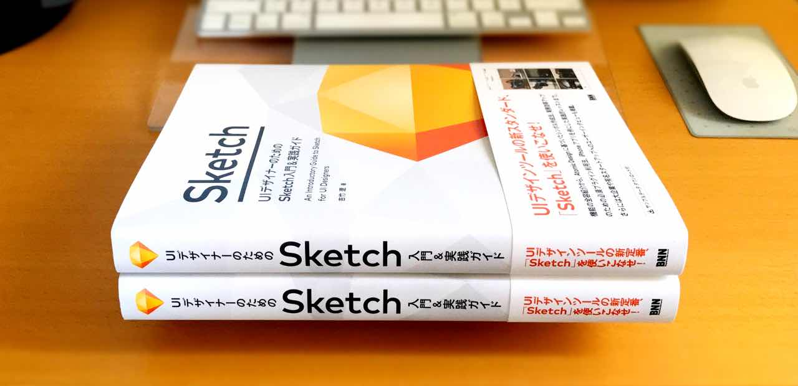
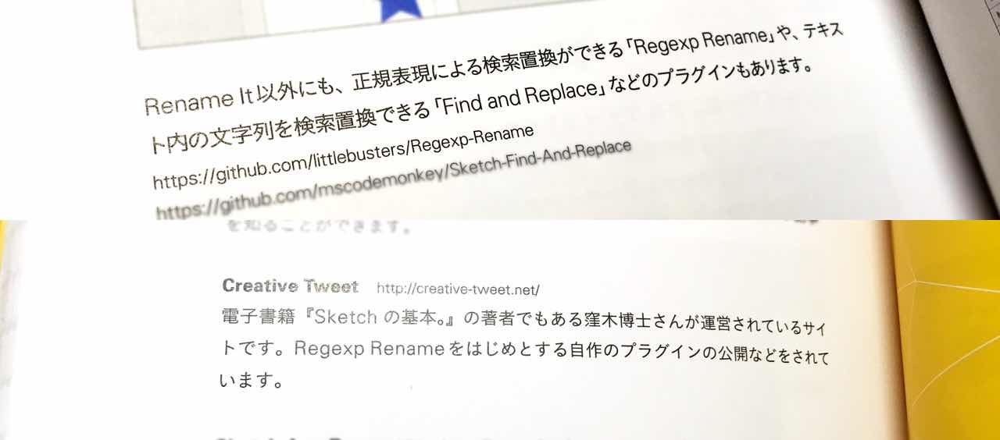

2017年5月23日発売の「UIデザイナーのためのSketch入門＆実践ガイド」を頂戴いたしました。著者の吉竹さんならびに関係者のみなさまありがとうございます！ 僭越ながら、読んだ所感などを記しておきたいと思います。

この「UIデザイナーのためのSketch入門＆実践ガイド」では、Sketchの基本的な機能の解説はもちろんのこと、そのコアとも言えるシンボルの使い方や応用方法、50ページ以上にわたる主要なプラグインや連携サービスの解説など、幅広い内容が収録されています。またモバイルアプリのUIを作るチュートリアルもあり、書籍で学んだことを手を動かして身につけられるような構成になっています。
特にシンボルのセクションでは、Atomic Designを解説しながら、吉竹さんなりに使いやすくアレンジしたフレームワークを紹介されています。Sketchは特にAtomic Designを取り入れて制作しやすいアプリですが、それなりに経験も必要でスムーズな導入はできないことも事実です。Atomic Designに挫折した方は、これで再チャレンジしてみてはどうでしょうか？
モバイルアプリのUIをつくるチュートリアルでは、細かな解説はもちろんのこと、現場で実践する際に気をつけるべき点なども解説されているので、よりSketchの使い方について理解が深まることでしょう。
あとは、以前募集されていたSketchの利用動向調査の結果、実際にSketchを使われている方々のインタビュー（利用のきっかけや現場で気をつけていることなど）も収録されており、こちらもなかなか面白い内容でした。
そして、なんと書籍中の「参考サイト」としてこのサイトと、拙作プラグイン「Regexp Rename」をご紹介いただきました。ありがとうございます（ついでにGitHubで公開しているプラグイン一覧）。
 感謝しかない。
SketchはAppleのお作法に準じた使い勝手のアプリで、初めてでもそれとなしに使えてしまいます。しかし、あるレベル以上で効率よく使いこなすためには、アプリの機能を把握することが欠かせません。とはいえ、インターフェイスが英語で、長年使ってきた他のツールとコンセプトが違うとなれば、それなりの覚悟をもって取り組む必要があるでしょう。
インターネットで調べれば、ある程度の情報は得ることができます。しかし情報は点在してまとめて入手できませんし、その鮮度やレベル・信頼性などを判断しなければならず、初学のうちはハードルが決して低くはありません。ましてやSketchに関しては、日本語で書かれた情報はそこまで多くないという状況もあります。
そんな時、頼りになるのが書籍です。情報がまとまっていることはもちろんのこと、前線で活用されている方が執筆されたとあれば信頼性も高いため、情報を探してインターネットをさまようよりも、本を読むほうが効率的です。また、技術書は価格が高いと思われがちですが、知識の「ショートカット」ができることを考えると、支払ったお金は十分にペイできると考えています。
買うなら早めがベスト
ちなみに、私がSketchのセクションを執筆した「Web制作者のためのIllustrator＆ベクターデータの教科書 マルチデバイス時代に知っておくべき新・グラフィック作成術」から、この「UIデザイナーのためのSketch入門＆実践ガイド」発売まで約2年。Sketchはその間に10回ほどアップデートしています（マイナーアップデートを入れるともっと多い）。
そして、おそらくこの本を印刷をしているであろうという時期に、Sketch 44 Betaのリリースおよび正式版のリリースまで行われました（自分の本ではありませんが、書籍の予約をしていたこともあり、正式版のアップデートがリリースされた時は胃が痛くなりました）。
これだけアップデートの多いアプリですから、情報が固定されてしまう紙の本は新鮮なうちに読んでしまい、その内容を自分のものにしたほうがよいでしょう（この本をDisっているわけではなく、これ自体が紙のHowTo本全体の宿命なんですよね……）。
とはいえ、Facebookページがありますので、フォローしておけばアップデートの情報もサポートされるんじゃないかと思っています。
蛇足
自称Sketchおじさんとして、Sketch 2の頃からブログ等でおすすめし、さらに「Sketchの基本。」という電子書籍も執筆し、アップデートしながら販売をしています。この本が発売されると聞いて、やっと時代が追いついたか……とうれしく思っています（強がり）。
当然「UIデザイナーのためのSketch入門＆実践ガイド」と拙著「Sketchの基本。」とでは、被っている内容は多岐に渡ります。とりわけ、私の本はリファレンス的な使い方を想定してまして、基本的なことは動作も含めて細かく書き、応用は個々に任せるというスタンスですので、その辺りを参考にご購入いただければと思います。
というわけで、迷っている方はまずは「UIデザイナーのためのSketch入門＆実践ガイド」を買いましょう。その上で、「Sketchの基本。」もご検討いただけると幸いです。